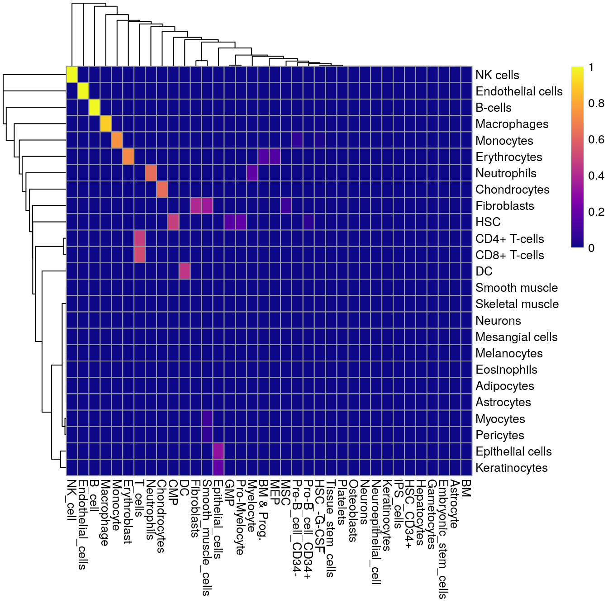

Chapter 6 Harmonizing labels
The matchReferences() function provides a simple yet elegant approach for label harmonization between two references. Each reference is used to annotate the other and the probability of mutual assignment between each pair of labels is computed. Probabilities close to 1 indicate there is a 1:1 relation between that pair of labels; on the other hand, an all-zero probability vector indicates that a label is unique to a particular reference.
library(SingleR)
bp.se <- BlueprintEncodeData()
hpca.se <- HumanPrimaryCellAtlasData()
matched <- matchReferences(bp.se, hpca.se,
bp.se$label.main, hpca.se$label.main)
pheatmap::pheatmap(matched, col=viridis::plasma(100))
A heatmap like the one above can be used to guide harmonization to enforce a consistent vocabulary across all labels representing the same cell type or state. The most obvious benefit of harmonization is that interpretation of the results is simplified. However, an even more important effect is that the presence of harmonized labels from multiple references allows the classification machinery to protect against irrelevant batch effects between references. For example, in SingleR()’s case, marker genes are favored if they are consistently upregulated across multiple references, improving robustness to technical idiosyncrasies in any test dataset.
We stress that some manual intervention is still required in this process, given the risks posed by differences in biological systems and technologies. For example, neurons are considered unique to each reference while smooth muscle cells in the HPCA data are incorrectly matched to fibroblasts in the Blueprint/ENCODE data. CD4+ and CD8+ T cells are also both assigned to “T cells”, so some decision about the acceptable resolution of the harmonized labels is required here.
As an aside, we can also use this function to identify the matching clusters between two independent scRNA-seq analyses. This is an “off-label” use that involves substituting the cluster assignments as proxies for the labels. We can then match up clusters and integrate conclusions from multiple datasets without the difficulty of batch correction and reclustering.